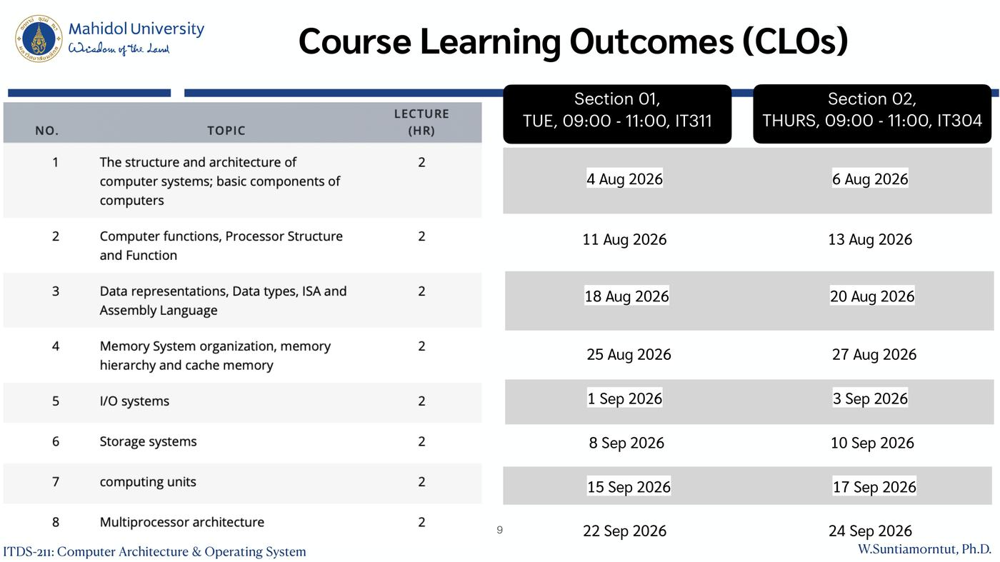

ภาพรวมบทนี้ สไลด์แนะนำวิชา ITDS-211 Computer Architecture & Operating System ในครึ่ง Computer Architecture สอนโดย W. Suntiamorntut, Ph.D.
ไม่มีเนื้อหาเทคนิคโดยตรง แต่บอกว่าครึ่งนี้เรียนอะไรบ้าง ให้คะแนนอย่างไร อ่านหนังสืออะไร และแต่ละหัวข้อเชื่อมกับ Course Learning Outcomes (CLOs) อย่างไร
ครึ่ง Computer Architecture เรียนก่อน (ส.ค.–ก.ย.) แล้วตามด้วยครึ่ง Operating Systems (Lecture 1–2)
1. Course Information
| หัวข้อ | รายละเอียด |
|---|---|
| เอกสารประกอบ | อยู่ใน MyCourse ITDS211 |
| Office Hour | ห้อง IT236 วัน พฤหัสบดี 15:00–16:30 น. |
Grading ของครึ่ง Computer Architecture (รวม 50 คะแนน)
| ส่วน | คะแนน |
|---|---|
| Examination (Midterm) | 30 |
| Homework assignments | 15 |
| Quiz | 5 |
| รวม | 50 |
💡 อีก 50 คะแนนมาจากครึ่ง OS (Quizzes 10%, Homework 10%, Final 30% ใน Lecture 1) รวมกันเป็น 100
⚠️ Midterm (30) มีน้ำหนักมากที่สุดของครึ่งนี้ ส่วน Quiz มีแค่ 5
2. Course Description
ภาษาอังกฤษ (ตามสไลด์): The structure and architecture of the computer systems; basic components of computers; data representations; the Assembly Language; memory system organization; the memory hierarchy; the cache memory; input and output systems; storage systems; computing units; the multiprocessor architecture; basic principles of operating systems; the computer resource management; the process management and scheduling; synchronization; deadlocks; memory management: segmentation and paging; the virtual memory; protection; sharing; the access control; file and I/O systems
ภาษาไทย (ตามสไลด์): โครงสร้างและสถาปัตยกรรมของระบบคอมพิวเตอร์ ส่วนประกอบพื้นฐานของเครื่องคอมพิวเตอร์ การแทนข้อมูล ภาษาแอสเซมบลี โครงสร้างระบบหน่วยความจำและการจัดลำดับชั้น หน่วยความจำแคช ระบบการรับเข้าและส่งออกข้อมูล ระบบการเก็บข้อมูล สถาปัตยกรรมของหน่วยประมวลผลแบบหลายหน่วย หลักการพื้นฐานของระบบปฏิบัติการ การจัดการหน่วยประมวลผลงานและการจัดลำดับงาน การประสานเวลา การติดตาย การจัดการหน่วยความจำ การป้องกันและการใช้ร่วมกัน ระบบแฟ้มข้อมูล ระบบข้อมูลเข้า-ออก
แบ่งให้เห็นภาพ
| ครึ่ง Computer Architecture | ครึ่ง Operating Systems |
|---|---|
| structure & architecture, basic components | basic principles of OS, resource management |
| data representations, Assembly Language | process management & scheduling |
| memory organization, memory hierarchy, cache | synchronization, deadlocks |
| input/output systems, storage systems | memory management: segmentation, paging, virtual memory |
| computing units, multiprocessor architecture | protection, sharing, access control, file & I/O systems |
💡 ทำไมสองเรื่องอยู่วิชาเดียวกัน? OS คือซอฟต์แวร์ที่บริหาร hardware ถ้าไม่เข้าใจ CPU, memory, cache, I/O ก่อน ก็จะเข้าใจยากว่า OS จัดการสิ่งเหล่านี้อย่างไร (คำอธิบายเสริม)
3. Course Outline — Half Semester (ครึ่ง Computer Architecture)
- The structure and architecture of the computer systems
- Basic components of computers
- Data representations
- The Assembly Language
- Memory system organization
- The memory hierarchy; the cache memory
- Input and output systems
- Storage systems
- Computing units
- The multiprocessor architecture
4. Textbooks
| หนังสือ | ผู้แต่ง / สำนักพิมพ์ |
|---|---|
| Computer Architecture: A Quantitative Approach (7th edition, 2026) | Hennessy and Patterson, Morgan Kauffman |
| Computer Organisation and Architecture (11th edition, 2022) | William Stallings |
| Computer Organisation and Design RISC-V edition: The hardware software interface (2020) | David A. Patterson, John L. Hennessy, Morgan Kaufmann Series |
💡 เล่ม RISC-V ตรงกับ Chapter 03 ที่ใช้ภาษา Assembly แบบ RISC-V
5. Course Objectives
5.1 เป้าหมายของครึ่ง Computer Architecture
ศึกษาบทบาทของสถาปัตยกรรมคอมพิวเตอร์ต่อประสิทธิภาพของระบบและโปรแกรม ผ่านคำถาม:
- ส่วนไหนของการออกแบบสถาปัตยกรรม ที่มีผลต่อประสิทธิภาพของแอปพลิเคชัน?
- ส่วนประกอบหลัก ของ Computer Architecture (CA) คืออะไร?
- สถาปัตยกรรมของ processor ประสิทธิภาพสูงในปัจจุบัน เป็นอย่างไร?
- แนวโน้มใหม่ (emerging trends) ของ CA คืออะไร?
- ใช้แนวทางเชิงปริมาณ (quantitative approach) วิเคราะห์ CA — คือวัดและคำนวณเป็นตัวเลข ไม่ใช่แค่บรรยาย
วิชานี้ไม่ใช่ (What the course is not):
- Hardware design (ไม่ได้ออกแบบวงจร)
- รายละเอียดเทคโนโลยี semiconductor
5.2 Course Objectives 10 ข้อ
เมื่อจบวิชา นักศึกษาควรสามารถ:
- เข้าใจ การจัดองค์ประกอบพื้นฐานของคอมพิวเตอร์ดิจิทัล, pipelining และ parallelism
- อธิบาย การทำงานของคำสั่ง (instruction executions), รูปแบบ ISA และ addressing mode
- ประเมิน ตัวชี้วัดประสิทธิภาพ (performance metrics)
- อธิบาย memory hierarchy
- อธิบาย การจัดระบบ I/O
- อธิบาย process management
- เข้าใจ concurrency และ synchronisation
- วิเคราะห์ deadlocks
- เข้าใจ memory management
- อธิบาย file systems
6. Course Learning Outcomes (CLOs)
| CLO | เนื้อหา | มาจาก Objectives | กลุ่ม |
|---|---|---|---|
| CLO 1 | อธิบาย การจัดองค์ประกอบพื้นฐานของคอมพิวเตอร์ดิจิทัล รวมถึง instruction execution, ISA formats, addressing modes, pipelining และ parallelism | 1, 2 | Architecture fundamentals |
| CLO 2 | ประเมิน performance metrics และ อธิบาย memory hierarchy และ I/O organisation | 3, 4, 5 | Performance & hardware resources |
| CLO 3 | อธิบาย process management, concurrency, synchronisation และ วิเคราะห์ deadlocks ใน OS | 6, 7, 8 | OS process/concurrency topics |
| CLO 4 | เข้าใจ memory management และ file systems ใน OS | 9, 10 | OS storage management |
ลำดับการเรียนรู้ (จากสไลด์): Architecture basics → performance/hardware → OS process handling → OS storage handling
💡 CLO 1–2 เป็นของครึ่ง Computer Architecture ส่วน CLO 3–4 เป็นของครึ่ง Operating Systems
7. ตารางเรียน (ครึ่ง Computer Architecture)

- Section 01: วันอังคาร 09:00–11:00 น. ห้อง IT311
- Section 02: วันพฤหัสบดี 09:00–11:00 น. ห้อง IT304
- ทุกหัวข้อ 2 ชั่วโมง
| No. | Topic | Section 01 (อังคาร) | Section 02 (พฤหัส) | สรุปอยู่ในโฟลเดอร์ |
|---|---|---|---|---|
| 1 | The structure and architecture of computer systems; basic components of computers | 4 Aug 2026 | 6 Aug 2026 | Chapter01 |
| 2 | Computer functions, Processor Structure and Function | 11 Aug 2026 | 13 Aug 2026 | Chapter02 |
| 3 | Data representations, Data types, ISA and Assembly Language | 18 Aug 2026 | 20 Aug 2026 | Chapter03 |
| 4 | Memory System organization, memory hierarchy and cache memory | 25 Aug 2026 | 27 Aug 2026 | Chapter04 |
| 5 | I/O systems | 1 Sep 2026 | 3 Sep 2026 | Chapter05 |
| 6 | Storage systems | 8 Sep 2026 | 10 Sep 2026 | Chapter06 |
| 7 | Computing units | 15 Sep 2026 | 17 Sep 2026 | Chapter07 |
| 8 | Multiprocessor architecture | 22 Sep 2026 | 24 Sep 2026 | Chapter08 |
(คอลัมน์ขวาสุดเสริมเอง เพื่อจับคู่หัวข้อกับไฟล์สรุป)
8. สรุปท้ายบท / จุดที่ควรจำ
- ครึ่ง Computer Architecture สอนโดย W. Suntiamorntut, Ph.D. office hour IT236 พฤหัส 15:00–16:30
- คะแนน 50: Midterm 30, Homework 15, Quiz 5
- 8 หัวข้อ ตั้งแต่โครงสร้างคอมพิวเตอร์ถึง multiprocessor architecture เรียนหัวข้อละ 2 ชั่วโมง
- หนังสือหลัก 3 เล่ม: Hennessy & Patterson (Quantitative Approach, 7th ed.), Stallings (11th ed.), Patterson & Hennessy (RISC-V edition)
- เน้น quantitative approach และบทบาทของสถาปัตยกรรมต่อ performance ไม่ใช่ hardware design หรือ semiconductor
- 10 objectives → 4 CLOs: CLO1 (obj 1–2, architecture fundamentals), CLO2 (obj 3–5, performance & hardware), CLO3 (obj 6–8, OS process/concurrency), CLO4 (obj 9–10, OS storage)